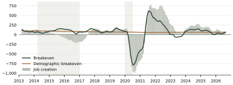
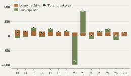
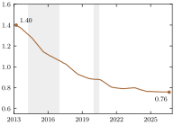
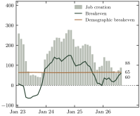
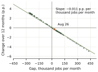

Key findings
A lower breakeven. Brazil needs around 60,000 new jobs per month to keep unemployment stable. The demographic component has fallen from 100,000 in 2013 to 65,000 as growth in the population of working age has roughly halved.
Late 2025. Average monthly job creation over 12 months fell from 155,000 to 97,000. Unemployment nevertheless continued to fall by around 1 percentage point a year because declining participation brought breakeven close to zero.
2026. Participation stopped falling and breakeven returned to 60,000. With monthly job creation at 88,000, the gap above breakeven narrowed to 28,500 and the annual decline in unemployment slowed to 0.3 percentage point.
A rule of thumb. Every 10,000 jobs per month above breakeven, sustained for a year, reduce unemployment by around 0.1 percentage point.
What to watch. If participation rises at its 2019 pace, creating 90,000 jobs a month will only keep unemployment stable.
Reading the monthly numbers
Every month, PNAD Contínua reports changes in the number of people employed in Brazil. On its own, this figure says little about labor market tightness: its effect on unemployment also depends on how many people join the labor force. Monthly gains of 80,000 jobs may lower unemployment in one year and raise it in another.
A useful benchmark is breakeven: the number of jobs the economy needs to add each month to keep the unemployment rate unchanged. The Federal Reserve Bank of San Francisco publishes this measure for the United States (Petrosky Nadeau and Stewart, 2024). This note estimates breakeven for Brazil using monthly PNAD observations from March 2012 to August 2026, relates the gap between job creation and breakeven to changes in unemployment, and separates the demographic and participation components. Box 1 sets out the calculations.
Box 1: Calculating breakeven
Let denote employment and the labor force. The unemployment rate is . To keep unchanged from one month to the next, employment must grow by times the increase in the labor force. This is breakeven: (1) Define the employment gap as job creation minus breakeven, . This gap determines the change in unemployment exactly: (2) Over twelve months, an average gap changes the unemployment rate by approximately (3) percentage points. With a labor force of 109 million, this is 0.011 percentage point per thousand jobs a month. The labor force equals the population of working age times its participation rate , giving the exact decomposition . Breakeven can therefore be written as (4) The first term is the employment growth needed to absorb population growth with participation held constant. The second captures people entering or leaving the labor force.
A decade of cycles
Figure 1 compares job creation with breakeven since 2013; Table 1 summarizes the main periods. During the 2015 and 2016 recession, employment fell by an average of 129,000 a month while the labor force continued to grow, raising unemployment from 6.6% to 12.1%. In the recovery from 2017 to 2019, job creation exceeded breakeven by just 32,000 a month, and unemployment fell by around one percentage point over three years.
Figure 1: Job creation has exceeded breakeven since mid 2021
Thousand jobs per month, 12 month averages. Shaded areas: recessions dated by CODACE.

Source: IBGE (PNAD Contínua); author's calculations.
View data
In 2020, employment fell by 688,000 a month. The labor force also shrank by around 480,000 a month as many people stopped looking for work. Unemployment rose by 3.1 percentage points; with participation unchanged, the same job losses would have raised it by around 9 points. The reverse occurred in 2021 and 2022: returning workers pushed breakeven up to 220,000 a month, but job creation was even stronger and unemployment fell by more than six points. The gap measured over 12 months has been positive since July 2021, taking unemployment to 5.1% in December 2025, the lowest rate in the series.
Table 1: Job creation, breakeven and unemployment by period
Monthly averages, thousands. Unemployment changes are measured from the end of the preceding period.
| Breakeven | Unemployment | ||||||
|---|---|---|---|---|---|---|---|
| Period | Job creation | Total | Demographics | Participation | Gap | Change (p.p.) | End (%) |
| 2013 to 2014 | 89 | 75 | 97 | −22 | 14 | −0.3 | 6.6 |
| 2015 to 2016 | −129 | 104 | 82 | 22 | −233 | +5.6 | 12.1 |
| 2017 to 2019 | 130 | 98 | 70 | 28 | 32 | −1.1 | 11.1 |
| 2020 | −688 | −431 | 61 | −493 | −256 | +3.1 | 14.2 |
| 2021 to 2022 | 494 | 220 | 61 | 159 | 274 | −6.2 | 7.9 |
| 2023 to 2025 | 152 | 66 | 64 | 3 | 86 | −2.9 | 5.1 |
| Latest 12 months | 88 | 60 | 65 | −5 | 29 | −0.3 | 5.3 |
Latest 12 months: September 2025 to August 2026. Components may not add up because of rounding.
The decline in the demographic component
In 2013, Brazil needed around 100,000 new jobs a month simply to keep up with growth in the population of working age. Today, that figure is 65,000 (Figure 2).
This decline reflects slower growth in the population aged 14 and over, from 1.40% in the twelve months to March 2013 to 0.76% in the twelve months to August 2026 (Figure 3). The cohorts now reaching working age were born after fertility declined and are smaller. IBGE projects that total population growth will end in 2041 (IBGE, 2024). Participation, by contrast, has no clear trend: outside the pandemic, it ranged between 61.4% and 63.6% from 2012 and stood at 62.2% in August. Participation explains annual fluctuations in breakeven, while demographics account for its decline over the decade.
Figure 2: The demographic component has fallen by a third since 2013
Breakeven components, thousand jobs per month. Annual averages and the latest 12 months.

Source: IBGE (PNAD Contínua); author's calculations.
View data
Figure 3: Growth in the population of working age has almost halved
Population aged 14 and over, change over 12 months, %. Shaded areas: recessions.

Source: IBGE (PNAD Contínua); author's calculations.
View data
Breakeven in 2025 and 2026
In the second half of 2025, the average monthly pace of job creation over 12 months slowed from 155,000 in August to 97,000 in December (Figure 4). Unemployment nevertheless continued to fall by around one percentage point a year, as lower participation brought breakeven down from 63,000 to almost zero. The gap ended December at around 99,000 jobs a month.
In 2026, participation stopped falling. Its contribution to breakeven increased from to jobs a month, taking total breakeven back to 60,000. Monthly job creation fell to 62,000 in June and recovered to 88,000 in August, slightly below its December level. Between December and August, the gap narrowed by around 70,000 jobs a month to 28,500; higher breakeven accounted for 61,000 of that reduction. As a result, the annual decline in unemployment slowed from 1.1 percentage points in December to 0.3 in August.
A rule of thumb for the monthly release
Equation (3) translates a job creation scenario into an unemployment path, given an assumption for breakeven. This conversion has barely changed since 2013 because the labor force changes slowly (Figure 5): creating 10,000 jobs a month above breakeven for a year reduces unemployment by around 0.1 percentage point. Table 2 applies this rule to job creation of 90,000 a month, close to the latest reading. If participation stays flat, breakeven equals its demographic component of 65,000, and unemployment falls by another 0.3 percentage point over twelve months. If participation grows at its 2019 pace, breakeven rises to around 90,000 and unemployment stops falling. At the 2024 pace, breakeven reaches 120,000 and the same job growth raises unemployment by 0.3 percentage point.
Table 2: What 90,000 new jobs a month imply for unemployment
Job creation fixed at 90,000 a month; breakeven under three participation assumptions.
| Participation | Breakeven (thousand/month) | Gap (thousand/month) | Change over 12 months (p.p.) |
|---|---|---|---|
| Unchanged | 65 | 25 | −0.3 |
| Growing at the 2019 pace | 90 | 0 | 0.0 |
| Growing at the 2024 pace | 120 | −30 | +0.3 |
Author's calculations, with a labor force of 109 million.
Try the rule
Approximate change over 12 months, using the August 2026 labor force.
Figure 4: Breakeven fell in late 2025 and rose in 2026
Thousand jobs per month, 12 month averages. August 2026 values are shown at the right.

Source: IBGE (PNAD Contínua); author's calculations.
View data
Figure 5: A gap of 10,000 jobs a month lowers unemployment by around 0.1 point in a year
Each dot is a month, March 2013 to August 2026. The line uses the August 2026 labor force.

Source: IBGE (PNAD Contínua); author's calculations.
View data
Implications
With the demographic component at around 65,000, a pace of job creation that only stabilized unemployment in 2013 is now enough to reduce it. Comparing today’s number with averages from the previous decade can therefore understate labor market tightness.
Slower labor force growth explains part of the decline in unemployment in recent years. For wages, the source of that decline matters less because pay responds to the scarcity of available workers. It does matter for the persistence of low unemployment, which can be sustained with less job creation than in the past.
The average gap over 12 months helps interpret the annual change in unemployment. A positive gap is consistent with an annual decline in the rate, even if it rises in some months. In August, the gap was 28,500 jobs a month, less than a third of its December level. If participation continues to recover, breakeven should rise further and unemployment may stop falling even with steady job creation.
Data
Data are from the PNAD Contínua rolling three month estimates, March 2012 to August 2026. Employment flows are shown as 12 month averages. The survey covers informal employment and is not directly comparable with Novo CAGED. Breakeven is a retrospective measure that depends on participation.
References
CODACE, Comitê de Datação de Ciclos Econômicos. Business cycle dating announcements. Rio de Janeiro: FGV IBRE.
IBGE (2024). Population projections for Brazil and its states: 2024 revision. Rio de Janeiro: IBGE.
IBGE. PNAD Contínua. Monthly series. Rio de Janeiro: IBGE.